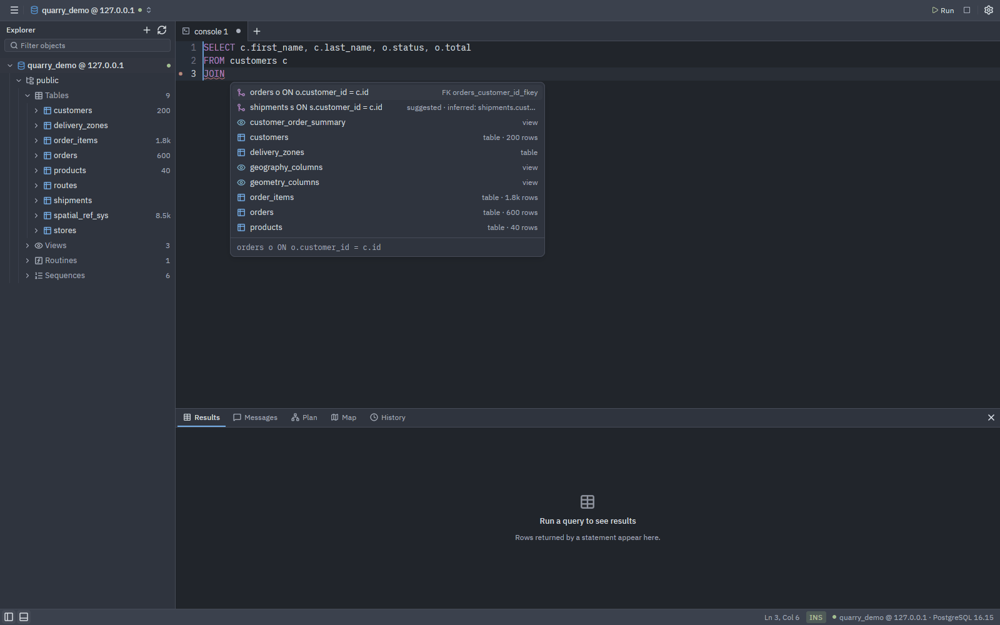

Joins from the schema
Completion knows your tables, columns, aliases and dialect-specific functions. After JOIN it proposes the whole clause, from declared and inferred foreign keys.
- Keywords, schemas, tables, columns, aliases, functions, snippets
- Inferred keys carry a confidence and are labelled suggested
- A formatter and a quiet diagnostics pass sit alongside
